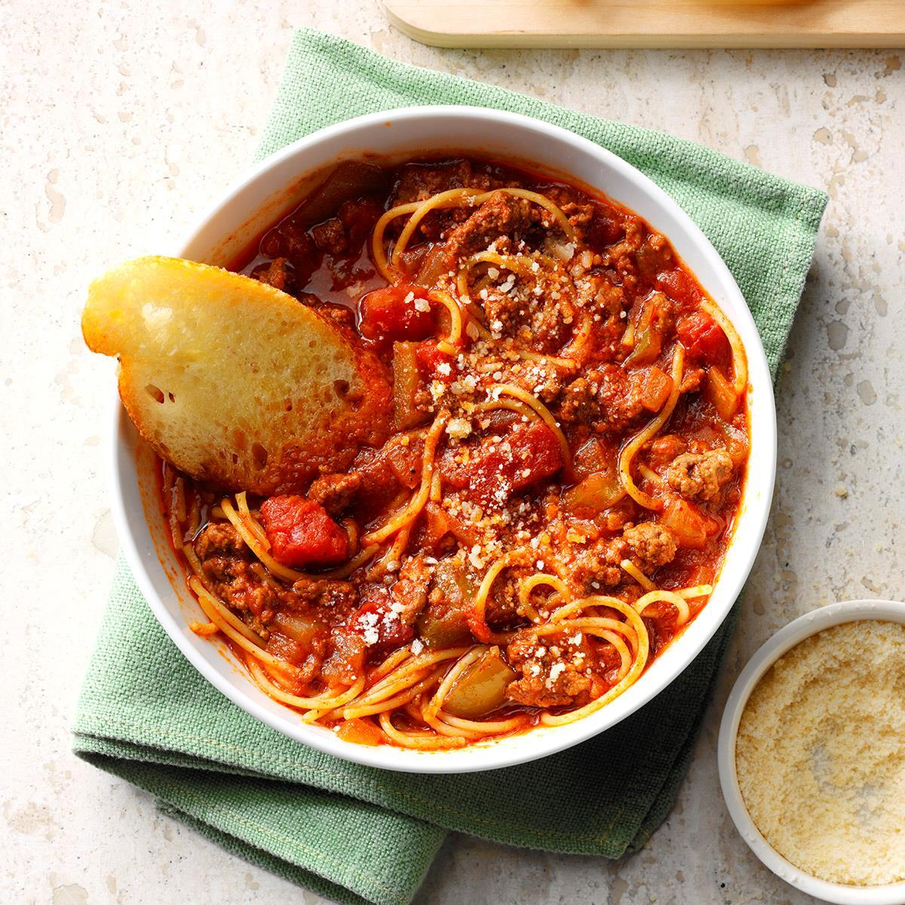

Spaghetti Sauce with Ground Beef

Description: a family favorite and will not be replaced!
This recipe has been handed down from my mother.
Serve over any variety of hot cooked pasta.
Ingredients
- 1 pound ground beef
- 1 medium onion, chopped
- 4 cloves garlic, minced
- 1 small green bell pepper, diced
- 1 (28 ounce) can diced tomatoes
- 1 (16 ounce) can tomato sauce
- 1 (6 ounce) can tomato paste
- 2 teaspoons dried oregano
- 2 teaspoons dried basil
- 1 teaspoon salt
- ½ teaspoon ground black pepper
Steps
- Step 1: Combine ground beef, onion, garlic, and green pepper
in a large saucepan over medium-high heat. Cook and stir until
meat is browned and crumbly and vegetables are tender, 5 to 7
minutes. Drain grease.
- Step 2: Stir diced tomatoes, tomato sauce, and tomato paste into
the pan. Season with oregano, basil, salt, and pepper. Simmer spaghetti
sauce for 1 hour, stirring occasionally.